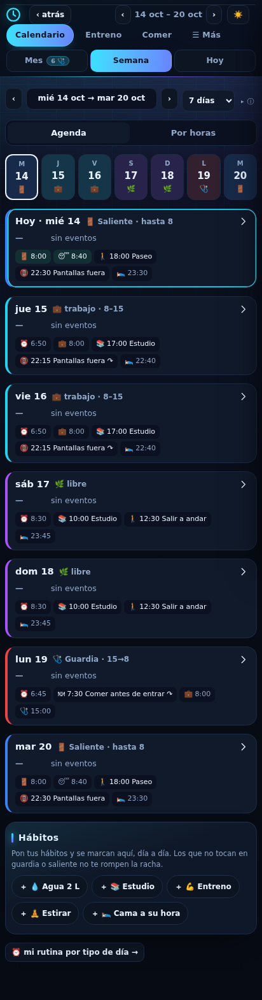
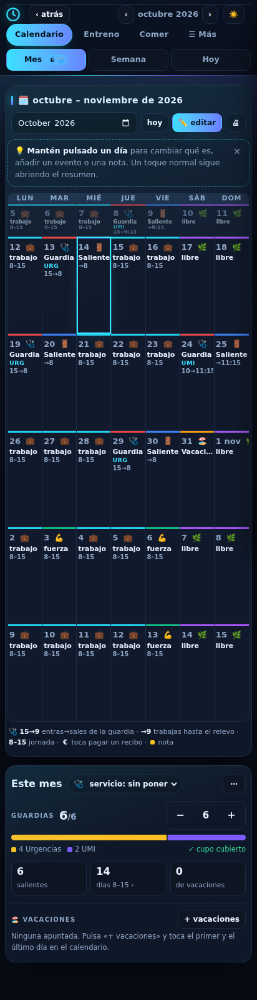

El mismo mundo a distinta distancia. Hoy es el asiento del conductor (cerca y ahora); Semana, el tablón de servicios de la cochera, donde se prepara el servicio de los siete días; Mes, el cuadrante de la empresa, con el abono del mes. Mismos colores que las paradas del conductor: jornada en rojo, guardia en azul noche con luna, comida en verde, planes en turquesa. Datos de ejemplo sacados de la app (una semana con guardia y saliente; un mes con seis guardias), no de nadie.
Siete filas (más ayer, en gris), cada una la línea de ese día en la misma escala de 6 de la mañana a 2 de la noche: se comparan de un vistazo (el lunes 19 no hay hueco; el saliente es siesta). Al principio, el autobús del tipo de día y los sellos de los hábitos; al final, la plaza de garaje con lo dormido (ayer) o lo previsto esta noche, en ámbar si no llega a tu objetivo. Hoy lleva la raya de la hora y el autobús. Toca una fila y debajo sale ese día con sus paradas, lo hecho y lo que falta por apuntar, y «Abrir su Hoy» lo abre en el conductor.
Antes

1 404 px (1,5 pantallas): la tira de días (72 px) y siete tarjetas de 125 px.
Tablón · viva (toca un día)
Unos 1 000 px con hábitos: el tablón ocupa 523 px y enseña la semana entera a la vez; el día tocado, debajo.
Se queda la rejilla (se edita igual: mantener pulsado cambia el turno) y cambia lo que hay en cada casilla: la ficha del servicio. Búho con luna la guardia (URG o UMI y sus horas), autobús rojo la jornada, flecha a la cochera el saliente, F/S («fuera de servicio») el libre y autocar las vacaciones. Las casillas bajan de unos 150 px a 72 sin perder los eventos. Arriba, el abono del mes: guardias hechas de las que tocan (taladradas), horas de servicio y findes libres; sustituye a la barra de guardias de «Este mes».
Antes

1 430 px (1,6 pantallas): la rejilla mide 1 075 px.
Cuadrante · viva
Unos 850 px con «Este mes»: rejilla de 465 px y abono de 103.